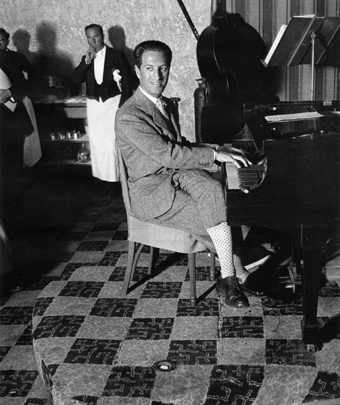
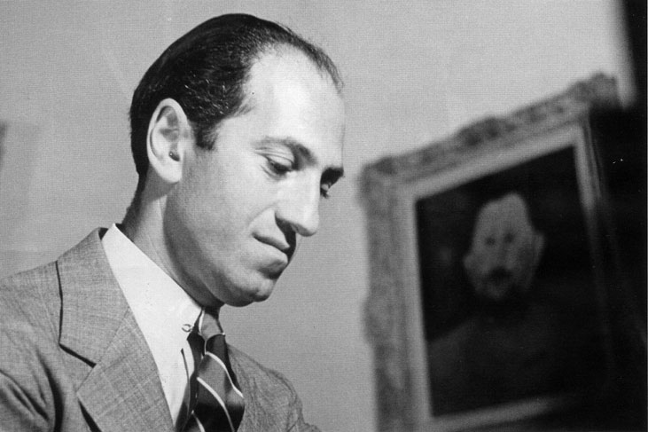
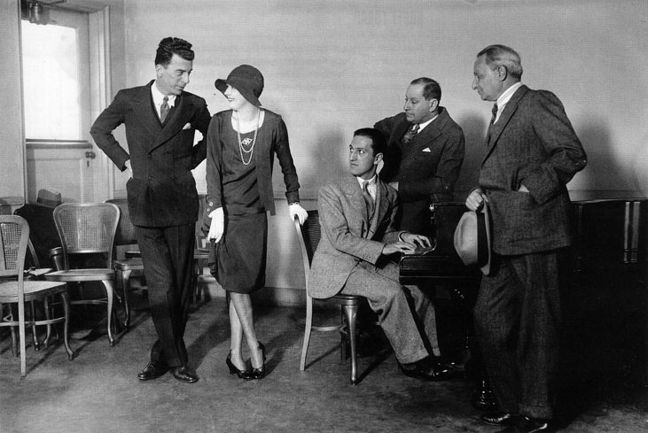
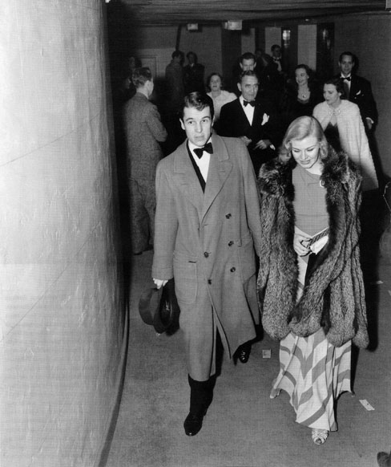
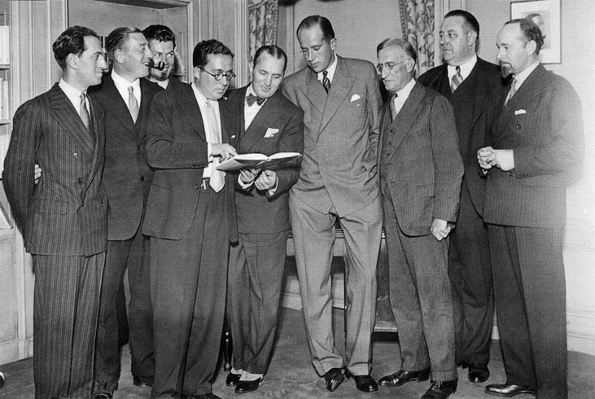
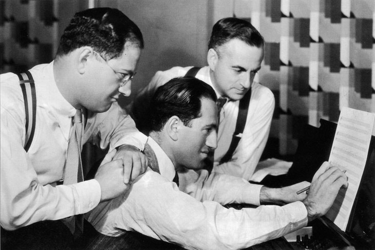
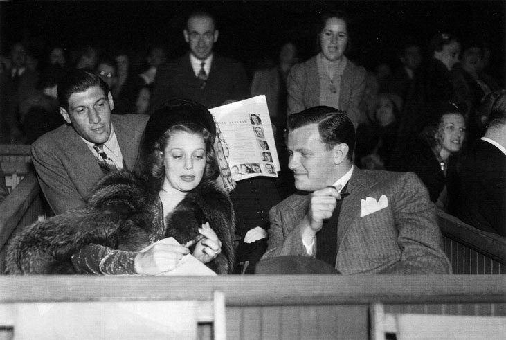

Джордж Гершуин
Джордж Гершуин
В 10 часа и 37 минути телефонът в дома на Айра Гершуин на улица Норт-Рокс-бери №1019 позвънява. Денят е 11 юли 1937. В телефонната слушалка изхриптява глас: „Обажда се д-р Карл Ранд от болница Cedars of Lebanon. Преди две минути светът осиротя. Ридайте, приятелю Айра. Джордж Гершуин е мъртъв." Айра, който е брат на Джордж, изпуска телефонната слушалка и в следващите десет часа не излиза от дома си. „Пресуших всички бутилки с алкохол вкъщи. Но не си позволих да пророня и една сълза за него, знам, че не би ми простил. Джордж никога не си позволяваше да плаче. Веднъж ми каза: Знам, че си по-голям от мен, но ми позволи да ти дам съвет - този объркан свят не заслужава нашите сълзи, А ако някога това се наложи, прави като мен -остави сълзите да се превръщат в ноти. Нямах сили за ноти, затова удавих мьката си в алкохола" - споделя Айра след години пред ВВС. Вечерта, когато всички бутилки са вече празни, Айра излиза на улицата. Отправя се към дома на Марлене Дитрих, която живее на същата улица на №822. След като вратата се отваря, той се срива в краката на актрисата. На въпроса й какво се е случило, Айра отвръща: „Чувала ли си как: Рапсодия в синьо излиза изпод ръцете му. Това повече никога няма да се случи." След като действието на алкохола отминава, Айра се свързва с майка си и сестра си, на които съобщава за смъртта на Джордж Гершуин. Когато настъпва утрото на следващия ден, светът все още не знае за случилото се. На 12 юли сутринта в болницата позвънява американският актьор, певец и близък приятел на Гершуин Джордж Джесел. Това е човекът, който оповестява официално смъртта на композитора в ефира на радио Hollywood Bowl: „Починалият днес в Холивуд преди три месеца ми каза, че в главата си има толкова звуци, че дори и сто години да живее, няма да успее да ги запише. Едва на 38 години Джордж Гершуин напусна нашия свят." На 15 юли в Америка е обявен национален траур. Дъждът залива Пето авеню, но това не пречи на хилядната тълпа да последва тялото на Гершуин до местната синагога, за да го изпрати в последния му земен път. Траурната церемония започва със Сюита за оркестър №3 от любимия композитор на Гершуин Йохан Себастиан Бах. След ритуала и под звуците вече на Рапсодия в синьо шествието се отправя към местността Hastings-on-Hudson, където тялото е отдадено на най-студената прегръдка на земята, както самият Гершуин нарича всяко погребение.

Джордж Гершуин свири на пиано в хотел Deauville, където прекарва ваканцията си. Маями Бийч, 19 февруари 1930
След смъртта на Гершуин славата му започва да расте невъобразимо. За две години музиката му се превръща в задължителна част от репертоара на най-големите симфонични оркестри в Европа и Русия. В Края на 1939 в Германия Хитлер забранява музиката на евреина Джордж Гершуин. „Това е музика, недостойна за слуха на всички онези, които са дали живота си в името на народа, в името на фюрера" - заявява Адолф Айхман. През 1940 в един от центровете на Гестапо Айхман дочува Рапсодия в синьо и... разстрелва двамата войници, нарушили заповедта. В Русия има същите забрани до края на Втората световна война. В един от лагерите на смъртта (Норильский) в навечерието на Нова година група лагерници (по документи 53-ма човека) изнамират отнякъде грамофон и слушат Than Can't Take That Away From Me на Джордж Гершуин. Старши лейтенант Панюков нарежда американската измет да бъде унищожена възможно най-скоро. На следващия ден в двора на изправителния трудов лагер 53 човешки глави са открити, отделени от телата, а върху снега до тях с въглищна пепел е изписано: Я пользуюсь вашей головой! Доста късно музиката на Гершуин излиза от сянката на всякакви забрани. Германия, Холандия, Полша, Италия, Гърция, Франция, Англия, Русия стават центрове на творчеството на Гершуин. През 1965 един от най-изтъкнатите немски композитори, Паул Хиндемит, чува изпълнение на прочутата симфонична поема Един американец в Париж и заявява: „Всички боготворим името Джордж Гершуин. Но кой е човекът, който създаде тази музика?" Така през следващите 10 години пазарът е залят с десетки биографии на американския композитор. Извайва се митът Гершуин. През 2005 в Guardian Гершуин е посочен като най-богатият композитор на всички времена.

Джордж Гершуин у дома в Бевърли Хилс на North Roxbury Drive 1019, 1 септември 1934
Роза Брускин и Морис Гершовиц са родени в Петербург. Тя е дъщеря на евреин, едър търговец на кожи. Той е син на богато аристократично също еврейско семейство. На 12 години Морис се увлича по оръжията. Не минава много време и успява да изобрети нов модел оръжие, което успява да продаде на руската армия. С това той печели не само добри пари, но и специални привилегии в Русия. Например това да работи каквото поиска независимо от еврейския си произход. Разбира се, службата в армията е задължителна. За сьжаление военната кариера не привлича по никакьв начин Морис и той решава да последва примера на част от своите роднини - да емигрира в Америка. По това време се запознава с Роза Брускин, която по неговите собствени думи го впечатлява с красотата си, доколкото една еврейка може да бъде красива. Любовта не успява да го отклони от решението за бягство от Петербург. Той се опитва да се свърже с брата на своята майка, който живее в Ню Йорк. След дълги перипетии се сдобива с адреса, който скрива във вътрешната страна на шапката, която не сваля от главата си. Така през 1890 Морис потегля към Америка. Когато от палубата на кораба съзира Статуята на свободата, Морис е в еуфория, но: „Стъпих върху перилата на кораба, като се опитвах да поема целия нов въздух, който ме обгръщаше от всички страни. Тогава се появи порив на вятъра... и отнесе шапката ми, а заедно с нея и адреса, на който трябваше да се срешна със сбоя вуйчо. Тъжно пристигане в Америка." Уви, злополучията не престават с изгубената шапка. На слизане от кораба, когато Морис минава през имиграционните служби, офицерът, който записва документите, прави грешка при вписване на името му в регистъра. Той вече не е Морис Гершовиц, а Морис Гершуин. Притеснен от изгубената шапка, той не забелязва грешката до момента, в който не получава новия си паспорт. Когато вижда коригираното име, Морис възкликва: „Какво пък толкова? Ново име. Нали съм си все същият красавец!" Въпреки несгодите Морис успява да се установи в Америка и да намери работа. Канят го да прави модели на обувки в една обувна фабрика. „Нещо, което, ако не беше сгрешеното ми име, съм сигурен, че нямаше да се случи" - Казва Морис.

Актьорите Джак Донахю и Мерлин Милър, композиторите Джордж Гершуин и Зигмунд Ромберг, както и бродуейският импресарио Флорънс Зигфрид по време на репетиция за мюзикъла Rosalie, 1927
В един пролетен ден, 12 април 1891, в двора на фабриката се появява хубаво еврейско момиче. Когато сваля огромната си шапка с периферия, Морис остава изумен. Момичето, което е зарязал в Петербург, сега стои отново пред него. Роза Брускин. Тя емигрира заедно с цялото си семейство също в Ню Йорк. Отложената любовна авантюра има всички шансове да се осъществи. На 21 юли 1895 историята прераства в невероятна еврейска сватба във винарската изба на Houston Street. Самият Морис разказва в едно интервю: „На сватбата, макар и за малко, намина младият главен комисар на полицейското управление в Ню Йорк Теодор Рузвелт." Същият, който пет години след това стаба 26-ият президент на САЩ. След сватбата младото семейство наема собствена квартира на ъгъла на Hester Street и Eldridge Street. В края на следващата година на 6 декември се ражда първото дете на Роза и Морис - проплаква Айра Гершуин. Те го кръщават Изидор, но той сам сменя името си през 1908, когато получава паспорт. След няколко месеца семейство Гершуин се преместват в Бруклин на Snediker Avenue 242 в двуетажна дървена къща, за която плащат 15 долара на месец. На първия етаж са дневната, кухнята и стаята за слугата, а на втория има четири спални. Едната от тях Морис отдава под наем (срещу 1 долар на седмица) на главния счетоводител на фирмата за шевни машини Singer г-н Тафелщейн. В този дом на 26 септември 1898 се ражда Джордж Гершуин. В акта за раждане е изписано името Якоб Гершуин. Също както и Айра, Якоб сменя името си след години, но въпреки това, когато родителите им се обръщат към тях, използват истинските им имена. На 14 март две години по-късно се ражда Артур Гершуин, който успява да се реализира в кинобизнеса като композитор. Америка помни неговото име с мюзикъла Тhe Lady Says Yes, който Артур поставя на Бродуей през 1945. Точно на десетия рожден ден на най-големия син на семейство Гершуин се ражда и последното дете, единственото момиче - Франсиз. Когато бащата Морис заедно с тримата си синове отива да види Роза и Франсиз, въздъхва тежко с характерното си чувство за хумор: „Е, скъпа, трима диваци и една дама - аз мисля да спрем до тук с децата." Малката Франсиз също развива музикални способности. Тя става великолепна танцьорка и виртуозен пианист. Пианото в семейство Гершуин е най-оспорваната „играчка". Айра, Артур и Франсиз непрекъснато се карат кой да седне да свири, докато Джордж се рови в голямата семейна библиотека и чете Артър Конан Дойл, О'Хенри, Мопасан. И най-вече се възхищава на Джон Колиер, писател и художник, един от най-известните портретисти. „Въпреки че бях улисан в четене, аз улавях звуците, които се разнасяха вкъщи. Тогава ме вълнуваше това как тези звуци се сътворяват, а не просто как се изтръгват от музикалния инструмент" - споделя след години Джордж Гершуин в едно радиоинтервю в Париж.

Аристократичният богаташ Алфред Вандербилт придружава филмовата актриса Джинджър Роджърс на концерт на Гершуин. Лос Анджелис, 14 февруари 1937
Бащата решава да потърси учител за Джордж. След две години работа обаче бъдещата звезда Гершуин става недоволен от своите учители. Роза и Морис се карат - майката не вижда кой знае какъв потенциал в сина си и настоява пред Морис да престане да търси все по-скъпи и по-скъпи учители за Джордж: „Той никога няма да стане добър музикант, а композитор - това ще остане несбъдната мечта." Въпреки това бащата вярва в таланта на малкия Джордж и успява да се свърже с най-изтъкнатия музикант в Ню Йорк - Чарлз Хамбитцер. Малко преди да почине от туберкулоза през 1918, той казва: „Джордж Гершуин е ученик, който съм напълно сигурен, че ще остави следа в музикалната история. Без съмнение е малък гений. Той ми се сърди, че го занимавам с класическа музика, но знам, че това е важно, дори и след това да се занимава с рагтайм, блус или пък джаз." Така с добро начално образование младият 17-годишен Гершуин попада за няколко месеца като пианист във водевилен театър, а след това в малка издателска къща на партитури на Бродуей. В часовете, когато няма никой в издателството, Джордж упражнява способността си да разработва малки музикални форми. Когато се появи клиент, Гершуин използва възможността да седне на големия роял в приемната и да изсвири пожеланите от купувача ноти. С първите пари, които получава като заплата (10 долара), купува кипа (еврейска шапка) - подарък за баща си. Когато му я подава, Морис му казва: „Запомни! Позволи си поне веднъж в живота да изгубиш шапката си. Заради тази моя изгубена шапка имам вас."
Както винаги, първият голям музикален опит се оказва посредствен. Гершуин не е изключение - първата му оперета в осем и половина часа, която пише през 1919, е посрещната вяло от критиката: „Музика без особен дух и затлачена от музикални форми. Усеща се някакво влияние от Ървин Берлин и Джером Керн, но какво от това? Няма живот в тази музика." Въпреки критиката Гершуин не се отказва. В този период сьздава десетки песни, които след няколко години го превръщат в любим композитор на всички, а критиката променя тона си: „Този младеж бързо успя да съзрее. Америка има своя истински композитор." Като доказателство на 12 февруари 1924 Джордж Гершуин вече е пред рояла в най-голямата концертна зала в Ню Йорк Aeolian Hall. Вечерта е дъждовна. Всички са елегантно облечени и очакват да се случи нещо голямо, нещо важно. В този следвоенен период сред жителите на Америка цари емоционален и естетически глад. Три седмици преди тази дата пианистът и диригент Пол Уайтмън предлага на Гершуин да напише оркестрово произведение за неговия джаз оркестър. Така се ражда легендарната Рапсодия в синьо. На събитието присъстват известни културни меценати и дейци - Яша Хайфец, Фриц Крайслер, Сергей Рахманинов, Мориц Розентал, Игор Стравински, Виктор Херберт, Ернст Блох, Фани Херст. Концертът приключва и настъпва пълна еуфория, а един от най-строгите музикални критици, Пит Санборн, се провиква: „Днес Ейбрахам Линкълн, господа, има рожден ден. Той изкова Манифеста за еманципация на робите. Днес ние чухме изкования от Гершуин Манифест за еманципация на джаза." А Игор Стравински допълва: „Не, това не е манифест, това е началото на нова

Джордж Гершуин на награждаването на аниматора Робърт Рипли по повод второто издание на неговата книга Believe it or not!, 15 октомври 1931
класическа епоха в джаза." По повод гръмките изказвания Гершуин споделя: „Духовният Живот в Америка рухна след края на войната. Всичко наоколо е заразено с болестта на скептицизма. Рухнаха идеалите за демокрация, пуританската етика и оптимизмът. Нима джазът не ни връща, макар и за кратко, към бленувания от нас свят? Свобода. Вяра. Усещане за импровизация - от това се нуждае днешният човек:. И джазът е такава възможност." Вероятно и заради това Гершуин предприема следващата крачка - завладяване на Бродуей, мястото, откъдето джазът се утвърждава като господстваща форма на популярната музика в Америка. Гершуин създава музика за 15 спектакъла на Бродуей, което му печели прозвището най-талантливият представител на така наречения симфоничен джаз. Успоредно с оперетите той започва да композира и филмова музика, а това го прави още по-популярен. Започват да се нижат песни, клавирни пиеси, както и втора рапсодия. След всичко това Джордж посяга и кьм операта и създава първата национална американска опера - Порги и Бес.

Джордж Гершуин и неговият брат Айра
Седем месеца преди да умре, Гершуин споделя с брат си Айра: „Не успях да се оженя. Деца нямам. каква е причината? Мисля, че работата ми е само оправдание." Гершуин обаче не остава без жени около себе си. Всички жени, които са работили с композитора, са пленени от чара му. Голяма част от тях минават през спалнята му, но Гершуин държи на дискретността, затова името му остава неопетнено от необмислени любовни авантюри. Имената на Дороти Паркър, Елизабет Алън, Мерилин Милър често са свързвани с това на Гершуин, но няма никакви писмени доказателства. Най-голямата любовна авантюра на композитора е тази с американската композиторка Кай Суифт. За първи път те се срещат през 1925, когато Суифт е женена и има три деца. Уви, взаимоотношенията им никога не се задълбочават толкова, че да стигнат до брак. Причините са две. Самата Суифт предпочита да запазят връзката си такава, каквато е - неангажираща в битов план и плодотворна в професионален, а и няма основателни причини да разтрогва брака си. Другата причина е бащата на Гершуин. Поостарелият Морис негодува срещу залитането на сина си по тази използвана жена. Това става и повод отношенията между двамата да охладнеят. Гершуин не се съобразява с Морис и поддържа връзка със Суифт. Обществото често говори зад гърба им, но на двамата не им пука. Те прикриват сексуалните си приключения зад сериозните диалози върху музиката. Дори когато през 1937 година Суифт се развежда, не предприемат крачката да сключат брак или да заживеят заедно. „Той се плашеше от брака, струваше му се, че това ще го осакати, че ще му бъде отнета свободата" - Казва Кай Суифт. Но отказът на Гершуин всъщност има други мотиви. В началото на 1937 той се запознава с актрисата Полет Годар, по онова време съпруга на Чарли Чаплин. Полет само флиртува с композитора, черта, която ще я свърже след години и с актьора Бърджис Меридит, и с писателя Ерих-Мария Ремар, флирт, който омагьосва Гершуин, и той започва да я преследва.

Продуцентът Джо Манкевич и актрисата Лорета Йънг на концерт в Hollywood Bowl в памет на Гершуин няколко месеца след смъртта му, 11 септември 1937
Болестта му осуетява двумесечната им връзка. На 11 февруари по време на изпълнение на своя Концерт за пиано във фа внезапно губи съзнание и изпуска няколко такта. Джордж запазва самообладание и малцина са тези, които забелязват грешката. Не споделя за случилото се с никого, но през април отново изпада в такова състояние. Тогава се оплаква на личния си доктор Габриела Сигала (личен доктор и на Грета Гарбо) от странното поведение на тялото си. През юни започват редица изследвания, но не се стига до резултат. Докторите изказват мнението, че Гершуин е абсолютно здрав и единственото, от което се нуждае, е почивка. Тези последни месеци от живота си той прекарва потопен изцяло в страстта си да рисува. Известният изкуствовед Мак-Брайд пише: „Той не стана велик художник:, защото не му остана време. А се вижда колко близо е бил. Гершуин наистина е една велика личност, която буди възхищение." На 9 юли състоянието на Гершуин се влошава. Приет е в болница. Стая номер 113. След 15 години в същата болнична стая ще бъде приета и Мерилин Монро. Какво звездно съвпадение. След куп нови изследвания е намерен отговорът: Гершуин страда от рядко срещан злокачествен тумор на мозька. Въпреки че е опериран по спешност от най-добрия мозъчен хирург в САЩ, композиторът Джордж Гершуин напуска този семпъл свят по обедно време - в 11 часа и 45 минути. Край.